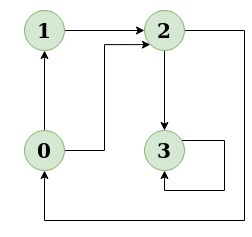

A graph is a data structure that consists of the following two components:
1. A finite set of vertices also called as nodes.
2. A finite set of ordered pair of the form (u, v) called as edge. The pair is ordered because (u, v) is not the same as (v, u) in case
of a directed graph(di-graph). The pair of the form (u, v) indicates that there is an edge from vertex u to vertex v. The edges may
contain weight/value/cost.
Graphs are used to represent many real-life applications: Graphs are used to represent networks. The networks may include paths in a city or
telephone network or circuit network. Graphs are also used in social networks like linkedIn, Facebook. For example, in Facebook, each person
is represented with a vertex(or node). Each node is a structure and contains information like person id, name, gender, and locale. See this
for more applications of graph.
Breadth First Traversal (or Search) for a graph is similar to Breadth First Traversal of a tree. The only catch here is, unlike trees, graphs may contain cycles, so we may come to the same node again. To avoid processing a node more than once, we use a boolean visited array. For simplicity, it is assumed that all vertices are reachable from the starting vertex.
EXPLANATION:
For example, in the following graph, we start traversal from vertex 2. When we come to vertex 0,
we look for all adjacent vertices of it. 2 is also an adjacent vertex of 0. If we don’t mark
visited vertices, then 2 will be processed again and it will become a non-terminating process.
A Breadth First Traversal of the following graph is 2, 0, 3, 1.

Following is Breadth First Traversal (starting from vertex 2) 2 0 3 1
JAVA CODE:
// java program to print BFS traversal from
// a given source vertex.
// BFS(int s) traverses vertices reachable from s.
import java.util.*;
import java.io.*;
// This class represents a directed graph using
// adjacency list representation
public class BFSGraph {
private int V; // No. of vertices
private LinkedList<Integer> adj[]; //Adjency Lists
// Constructor
BFSGraph(int v)
{
V=v;
adj=new LinkedList[v];
for(int i=0;i<v;++i)
adj[i]=new LinkedList();
}
//Function to add an edge into the graph
void addEdge(int v,int w)
{
adj[v].add(w);
}
// prints BFS traversal from a given source s
void BFS(int s)
{
// Mark all the vertices as not visited(by default
// set as false)
boolean visited[]=new boolean[V];
// Create a queue for BFS
LinkedList<Integer> queue = new LinkedList<Integer>();
// Mark the current node as visited and enqueue it
visited[s]=true;
queue.add(s);
while(queue.size()!=0)
{
// Dequeue a vertex from queue and print it
s=queue.poll();
System.out.print(s+" ");
// Get all adjacent vertices of the dequeued
// vertex s. If a adjacent has not been visited,
// then mark it visited and enqueue it.
Iterator<Integer> i=adj[s].listIterator();
while(i.hasNext())
{
int n=i.next();
if(!visited[n])
{
visited[n]=true;
queue.add(n);
}
}
}
}
}
Depth First Traversal (or Search) for a graph is similar to Depth First Traversal of a tree. The only catch here is, unlike trees, graphs may contain cycles, a node may be visited twice. To avoid processing a node more than once, use a boolean visited array.
Input: n = 4, e = 6 0 -> 1, 0 -> 2, 1 -> 2, 2 -> 0, 2 -> 3, 3 -> 3 Output: DFS from vertex 1 : 1 2 0 3
JAVA CODE:
// Java program to print DFS
//mtraversal from a given given
// graph
import java.io.*;
import java.util.*;
// This class represents a
// directed graph using adjacency
// list representation
class Graph {
private int V; // No. of vertices
// Array of lists for
// Adjacency List Representation
private LinkedList<Integer> adj[];
// Constructor
@SuppressWarnings("unchecked") Graph(int v)
{
V = v;
adj = new LinkedList[v];
for (int i = 0; i < v; ++i)
adj[i] = new LinkedList();
}
// Function to add an edge into the graph
void addEdge(int v, int w)
{
adj[v].add(w); // Add w to v's list.
}
// A function used by DFS
void DFSUtil(int v, boolean visited[])
{
// Mark the current node as visited and print it
visited[v] = true;
System.out.print(v + " ");
// Recur for all the vertices adjacent to this
// vertex
Iterator<Integer> i = adj[v].listIterator();
while (i.hasNext())
{
int n = i.next();
if (!visited[n])
DFSUtil(n, visited);
}
}
// The function to do DFS traversal.
// It uses recursive
// DFSUtil()
void DFS(int v)
{
// Mark all the vertices as
// not visited(set as
// false by default in java)
boolean visited[] = new boolean[V];
// Call the recursive helper
// function to print DFS
// traversal
DFSUtil(v, visited);
}
// Driver Code
public static void main(String args[])
{
Graph g = new Graph(4);
g.addEdge(0, 1);
g.addEdge(0, 2);
g.addEdge(1, 2);
g.addEdge(2, 0);
g.addEdge(2, 3);
g.addEdge(3, 3);
System.out.println(
"Following is Depth First Traversal "
+ "(starting from vertex 1)");
g.DFS(1);
}
}
Topological sorting for Directed Acyclic Graph (DAG) is a linear ordering of vertices such that for every directed edge u v, vertex u comes before v in the ordering. Topological Sorting for a graph is not possible if the graph is not a DAG.
Following is a Topological Sort of the given graph 5 4 2 3 1 0
EXPLANATION:
For example, a topological sorting of the following graph is “5 4 2 3 1 0”. There can be more than one topological sorting for a graph. For example, another topological sorting of the following graph is “4 5 2 3 1 0”. The first vertex in topological sorting is always a vertex with in-degree as 0 (a vertex with no incoming edges).
JAVA CODE:
// A Java program to print topological
// sorting of a DAG
import java.io.*;
import java.util.*;
// This class represents a directed graph
// using adjacency list representation
class Graph {
// No. of vertices
private int V;
// Adjacency List as ArrayList of ArrayList's
private ArrayList<ArrayList<Integer> > adj;
// Constructor
Graph(int v)
{
V = v;
adj = new ArrayList<ArrayList<Integer> >(v);
for (int i = 0; i < v; ++i)
adj.add(new ArrayList<Integer>());
}
// Function to add an edge into the graph
void addEdge(int v, int w) { adj.get(v).add(w); }
// A recursive function used by topologicalSort
void topologicalSortUtil(int v, boolean visited[],
Stack<Integer> stack)
{
// Mark the current node as visited.
visited[v] = true;
Integer i;
// Recur for all the vertices adjacent
// to thisvertex
Iterator<Integer> it = adj.get(v).iterator();
while (it.hasNext()) {
i = it.next();
if (!visited[i])
topologicalSortUtil(i, visited, stack);
}
// Push current vertex to stack
// which stores result
stack.push(new Integer(v));
}
// The function to do Topological Sort.
// It uses recursive topologicalSortUtil()
void topologicalSort()
{
Stack<Integer> stack = new Stack<Integer>();
// Mark all the vertices as not visited
boolean visited[] = new boolean[V];
for (int i = 0; i < V; i++)
visited[i] = false;
// Call the recursive helper
// function to store
// Topological Sort starting
// from all vertices one by one
for (int i = 0; i < V; i++)
if (visited[i] == false)
topologicalSortUtil(i, visited, stack);
// Print contents of stack
while (stack.empty() == false)
System.out.print(stack.pop() + " ");
}
// Driver code
public static void main(String args[])
{
// Create a graph given in the above diagram
Graph g = new Graph(6);
g.addEdge(5, 2);
g.addEdge(5, 0);
g.addEdge(4, 0);
g.addEdge(4, 1);
g.addEdge(2, 3);
g.addEdge(3, 1);
System.out.println("Following is a Topological "
+ "sort of the given graph");
// Function Call
g.topologicalSort();
}
}
Given a graph and a source vertex src in graph, find shortest paths from src to all vertices in the given graph. The graph may contain negative weight edges.
Vertex Distance from Source 0 0 1 -1 2 2 3 -2 4 1
JAVA CODE:
import java.util.*;
public class BellamansFord {
// Driver method to test above function
public static void main(String[] args) {
// TODO Auto-generated method stub
int V = 5; // Number of vertices in a graph
int E = 8; // Number of edges in a graph
GraphBF graph = new GraphBF(V, E);
// add edge 0-1 (or A-B in above figure)
graph.edge[0].src = 0;
graph.edge[0].dest = 1;
graph.edge[0].weight = -1;
// add edge 0-2 (or A-C in above figure)
graph.edge[1].src = 0;
graph.edge[1].dest = 2;
graph.edge[1].weight = 4;
// add edge 1-2 (or B-C in above figure)
graph.edge[2].src = 1;
graph.edge[2].dest = 2;
graph.edge[2].weight = 3;
// add edge 1-3 (or B-D in above figure)
graph.edge[3].src = 1;
graph.edge[3].dest = 3;
graph.edge[3].weight = 2;
// add edge 1-4 (or A-E in above figure)
graph.edge[4].src = 1;
graph.edge[4].dest = 4;
graph.edge[4].weight = 2;
// add edge 3-2 (or D-C in above figure)
graph.edge[5].src = 3;
graph.edge[5].dest = 2;
graph.edge[5].weight = 5;
// add edge 3-1 (or D-B in above figure)
graph.edge[6].src = 3;
graph.edge[6].dest = 1;
graph.edge[6].weight = 1;
// add edge 4-3 (or E-D in above figure)
graph.edge[7].src = 4;
graph.edge[7].dest = 3;
graph.edge[7].weight = -3;
graph.BellmanFord(graph, 0);
}
}
class GraphBF{
// A class to represent a weighted edge in a graph
class Edge{
int src, dest, weight;
Edge()
{
src = dest = weight = 0;
}
};
int V,E;
Edge edge[];
// Creates a graph with V vertices and E edges
GraphBF(int v, int e)
{
V = v;
E = e;
edge = new Edge[e];
for(int i=0; i < e; ++i)
edge[i] = new Edge();
}
// The main function that finds shortest distances from src to all other
// vertices using Bellman-Ford algorithm. The function also detects negative
// weight cycle
void BellmanFord(GraphBF graph, int src)
{
int V = graph.V, E = graph.E;
int dist[] = new int[V];
// Step 1: Initialize distances from src to all other vertices as INFINITE
for(int i=0; i<V; ++i)
dist[i] = Integer.MAX_VALUE;
dist[src] = 0;
// Step 2: Relax all edges |V| - 1 times. A simple shortest path from src
// to any other vertex can have at-most |V| - 1 edges
for(int i = 1; i < V; ++i)
{
for(int j=0; j < E; ++j)
{
int u = graph.edge[j].src;
int v = graph.edge[j].dest;
int weight = graph.edge[j].weight;
if(dist[u] != Integer.MAX_VALUE && dist[u]+weight < dist[v])
dist[v] = dist[u] + weight;
}
}
// Step 3: check for negative-weight cycles. The above steps guarantees
// shortest distances if graph doesn't contain negative weight cycle. If
// we get a shorter path, then there is a cycle.
for(int j=0; j < E; ++j) {
int u = graph.edge[j].src;
int v = graph.edge[j].dest;
int weight = graph.edge[j].weight;
if(dist[u] != Integer.MAX_VALUE && dist[u] + weight < dist[v]) {
System.out.println("Graph contains negative weight cycle");
return;
}
}
printArr(dist, V);
}
// A utility function used to print the solution
void printArr(int dist[], int V)
{
System.out.println("Vertex Distance from Source");
for(int i=0;i<V;++i) {
System.out.println(i+"\t\t"+dist[i]);
}
}
}
Given a graph and a source vertex in the graph, find shortest paths from source to all vertices in the given graph.

Vertex Distance from Source 0 0 1 4 2 12 3 19 4 21 5 11 6 9 7 8 8 14
JAVA CODE:
import java.util.*;
public class DijkstrasAlgorithm {
public static void main(String[] args) {
// TODO Auto-generated method stub
/* Let us create the example graph discussed above */
int graph[][] = new int[][] { { 0, 4, 0, 0, 0, 0, 0, 8, 0 },
{ 4, 0, 8, 0, 0, 0, 0, 11, 0 },
{ 0, 8, 0, 7, 0, 4, 0, 0, 2 },
{ 0, 0, 7, 0, 9, 14, 0, 0, 0 },
{ 0, 0, 0, 9, 0, 10, 0, 0, 0 },
{ 0, 0, 4, 14, 10, 0, 2, 0, 0 },
{ 0, 0, 0, 0, 0, 2, 0, 1, 6 },
{ 8, 11, 0, 0, 0, 0, 1, 0, 7 },
{ 0, 0, 2, 0, 0, 0, 6, 7, 0 } };
ShortestPath t = new ShortestPath();
t.dijkstra(graph, 0);
}
}
class ShortestPath{
// A utility function to find the vertex with minimum distance value,
// from the set of vertices not yet included in the shortest path tree
static final int V = 9;
int minDistance(int dist[], Boolean sptSet[])
{
// Initialize min value
int min = Integer.MAX_VALUE, min_index = -1;
for(int v=0; v<V; v++)
{
if(sptSet[v] == false && dist[v] <= min)
{
min = dist[v];
min_index = v;
}
}
return min_index;
}
// A utility function to print the constructed distance array
void printSolution(int dist[])
{
System.out.println("Vertex \t\t Distance");
for(int i = 0; i < V; i++) {
System.out.println(i + " \t\t " + dist[i]);
}
}
// Function that implements Dijkstra's single source shortest path
// algorithm for a graph represented using adjacency matrix representation
void dijkstra(int graph[][], int src)
{
int dist[] = new int[V]; // The output array. dist[i] will hold the
// the shortest distance from src to i
// sptSet[i] will true if vertex i is included in shortest path tree or
// shortest distance from src to i is finalized
Boolean sptSet[] = new Boolean[V];
// Initialize all distances as INFINITE and stpSet[] as false
for(int i = 0; i < V; i++) {
dist[i] = Integer.MAX_VALUE;
sptSet[i] = false;
}
// Distance of source vertex from itself is always 0
dist[src] = 0;
// Find shortest path for all vertices
for(int count = 0; count < V-1; count++) {
// Pick the minimum distance vertex from the set of vertices not yet
// processed. u is always equal to src in first iteration
int u = minDistance(dist, sptSet);
// Mark the picked vertex as processed
sptSet[u] = true;
// Update dist value of the adjacent vertices of the picked vertex.
for(int v = 0; v < V; v++) {
// Update dist[v] only if is not in sptSet, there is an edge from
// u to v, and total weight of path from src v through u is smaller
// than current value of dist[v]
if(!sptSet[v] && graph[u][v] != 0 && dist[u] != Integer.MAX_VALUE &&
dist[u]+graph[u][v] < dist[v])
dist[v] = dist[u] + graph[u][v];
}
// print the constructed distance array
printSolution(dist);
}
}
}
We have discussed Kruskal’s algorithm for Minimum Spanning Tree. Like Kruskal’s algorithm, Prim’s algorithm is also a Greedy algorithm. It starts with an empty spanning tree. The idea is to maintain two sets of vertices. The first set contains the vertices already included in the MST, the other set contains the vertices not yet included. At every step, it considers all the edges that connect the two sets, and picks the minimum weight edge from these edges. After picking the edge, it moves the other endpoint of the edge to the set containing MST.
Note that you cannot sell a stock before you buy one.
Edge Weight 0 - 1 2 1 - 2 3 0 - 3 6 1 - 4 5
JAVA CODE:
// A Java program for Prim's Minimum Spanning Tree (MST) algorithm.
// The program is for adjacency matrix representation of the graph
import java.util.*;
import java.lang.*;
import java.io.*;
class MST {
// Number of vertices in the graph
private static final int V = 5;
// A utility function to find the vertex with minimum key
// value, from the set of vertices not yet included in MST
int minKey(int key[], Boolean mstSet[])
{
// Initialize min value
int min = Integer.MAX_VALUE, min_index = -1;
for (int v = 0; v < V; v++)
if (mstSet[v] == false && key[v] < min) {
min = key[v];
min_index = v;
}
return min_index;
}
// A utility function to print the constructed MST stored in
// parent[]
void printMST(int parent[], int graph[][])
{
System.out.println("Edge \tWeight");
for (int i = 1; i < V; i++)
System.out.println(parent[i] + " - " + i + "\t" + graph[i][parent[i]]);
}
// Function to construct and print MST for a graph represented
// using adjacency matrix representation
void primMST(int graph[][])
{
// Array to store constructed MST
int parent[] = new int[V];
// Key values used to pick minimum weight edge in cut
int key[] = new int[V];
// To represent set of vertices included in MST
Boolean mstSet[] = new Boolean[V];
// Initialize all keys as INFINITE
for (int i = 0; i < V; i++) {
key[i] = Integer.MAX_VALUE;
mstSet[i] = false;
}
// Always include first 1st vertex in MST.
key[0] = 0; // Make key 0 so that this vertex is
// picked as first vertex
parent[0] = -1; // First node is always root of MST
// The MST will have V vertices
for (int count = 0; count < V - 1; count++) {
// Pick thd minimum key vertex from the set of vertices
// not yet included in MST
int u = minKey(key, mstSet);
// Add the picked vertex to the MST Set
mstSet[u] = true;
// Update key value and parent index of the adjacent
// vertices of the picked vertex. Consider only those
// vertices which are not yet included in MST
for (int v = 0; v < V; v++)
// graph[u][v] is non zero only for adjacent vertices of m
// mstSet[v] is false for vertices not yet included in MST
// Update the key only if graph[u][v] is smaller than key[v]
if (graph[u][v] != 0 && mstSet[v] == false && graph[u][v] < key[v]) {
parent[v] = u;
key[v] = graph[u][v];
}
}
// print the constructed MST
printMST(parent, graph);
}
public static void main(String[] args)
{
/* Let us create the following graph
2 3
(0)--(1)--(2)
| / \ |
6| 8/ \5 |7
| / \ |
(3)-------(4)
9 */
MST t = new MST();
int graph[][] = new int[][] { { 0, 2, 0, 6, 0 },
{ 2, 0, 3, 8, 5 },
{ 0, 3, 0, 0, 7 },
{ 6, 8, 0, 0, 9 },
{ 0, 5, 7, 9, 0 } };
// Print the solution
t.primMST(graph);
}
}